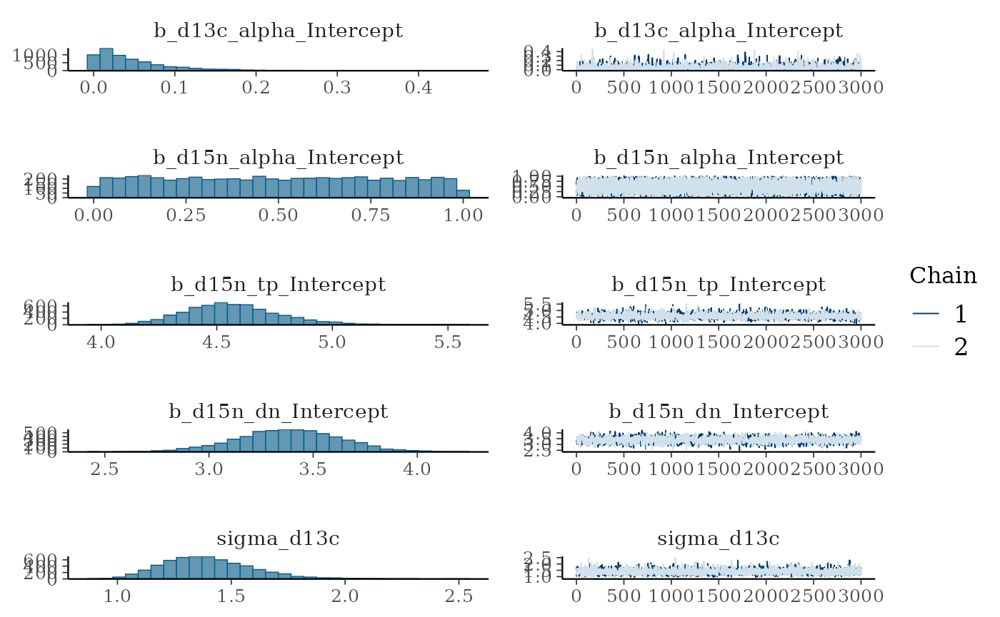
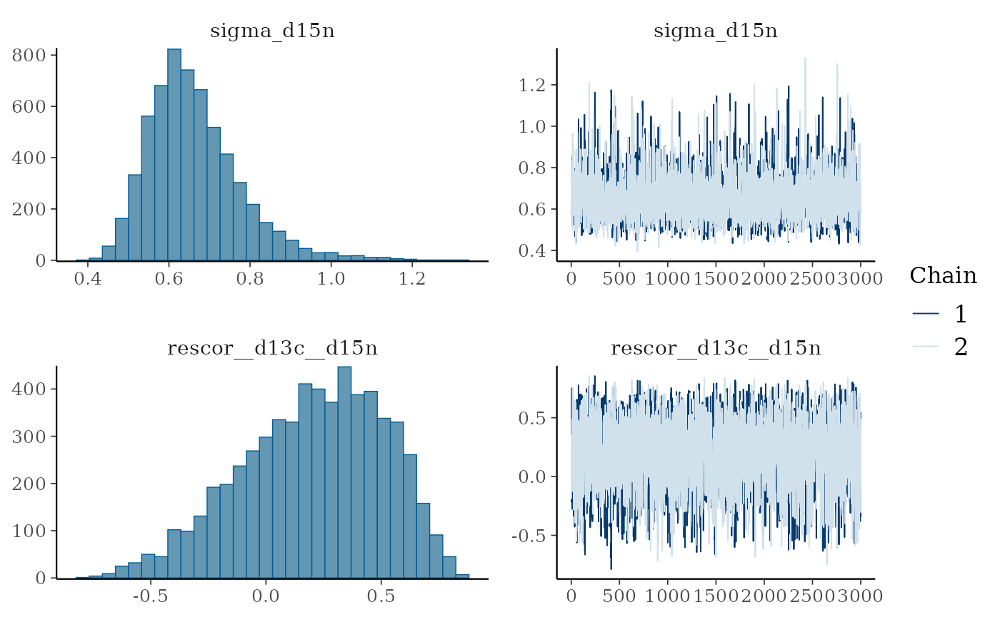
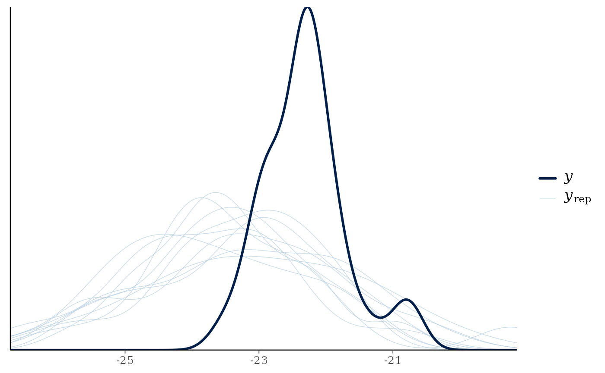
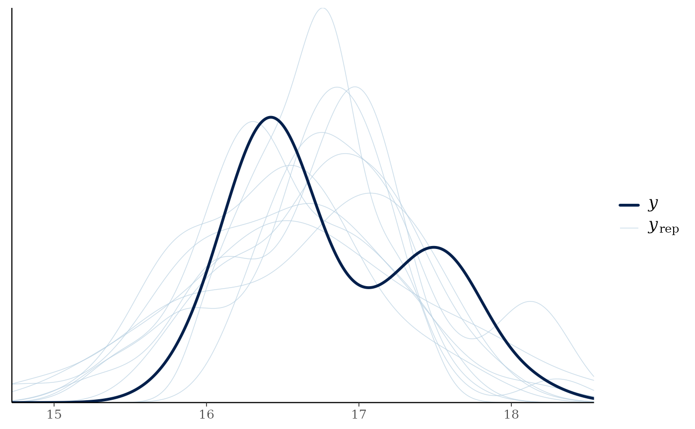
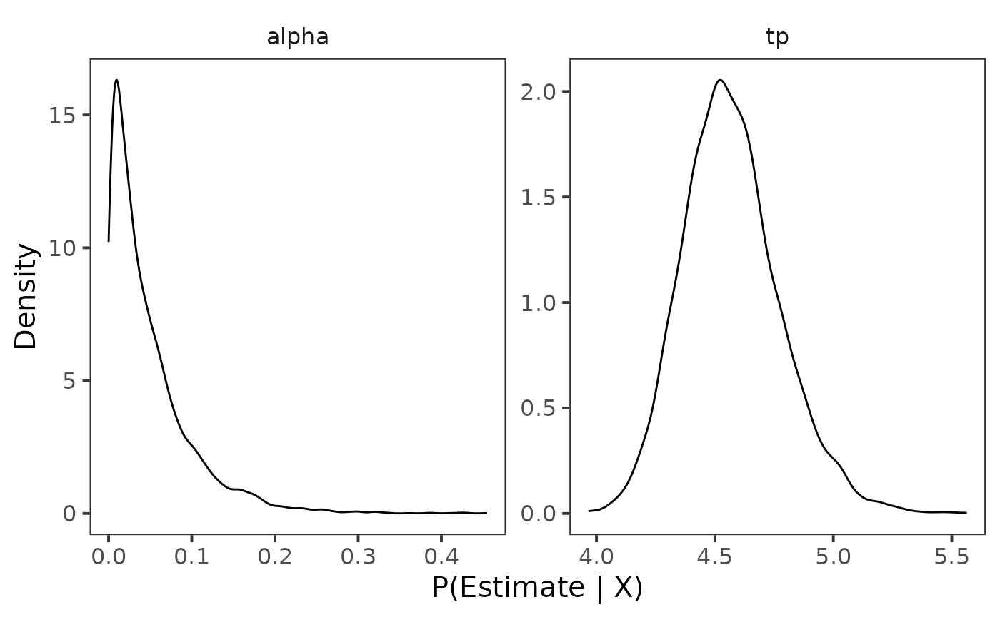

Estimate Trophic Position - Two Source Model
Benjamin L. Hlina
2025-03-17
Source:vignettes/article/estimate_trophic_position_two_source_model.Rmd
estimate_trophic_position_two_source_model.RmdOur Objectives
The purpose of this vignette is to learn how to estimate trophic position of a species using stable isotope data ( and ). We can estimate trophic position using a two source model that is based on equations from Post (2002) and Vander Zaden and Vadeboncoeur (2002).
Trophic Position Model
The equations for a two source model consists of the following:
is the isotope value of the consumer, is the mean isotope value of the first baseline, is the mean isotope value of the second baseline. For aquatic ecosystems, often is from a benthic source and is from a pelagic source. Lastly, is the proportion of carbon that comes from each source and should be bound by 0 and 1. We will see later that this does not always happen which can be problematic with Heuvel et al., (2024) proposing a new method to correct (i.e., scale) these values. Estimates of are used in the two source trophic postion equation below.
Where
is the trophic position of the baseline (e.g., 2),
is the
of the consumer,
is the mean
of the first baseline (e.g., benthic),
is the mean
of the second baseline (e.g., pelagic),
is estimated above, and
is the trophic enrichment factor (e.g., 3.4).
There is a variation of this model that uses a mixing model to consider different trophic position for each baseline (). The equation replaces with the following:
Where is the trophic level of the first baseline (e.g., 2), is the trophic level of the second baseline (e.g., 2.5), and is from above. Only use this replacement equation for if you have baselines from two different trophic levels.
Bayesian model
To use these model with a Bayesian framework, we need to rearrange the equation for to the following:
Estimates of are then used in the rearranged equation for trophic position below.
The function two_source_model() uses both of these
rearranged equation. If using baselines from two different trophic
levels, you can set the argument lambda to 2
to replace
(l1) with the mixing model for
above.
Vignette structure
First we need to organize the data prior to running the model. To do this work we will use {dplyr} and {tidyr} but we could also use {data.table}.
When running the model we will use {trps} and {brms}.
Once we have run the model we will use {bayesplot} to assess models and then extract posterior draws using {tidybayes}. Posterior distributions will be plotted using {ggplot2} and {ggdist} with colours provided by {viridis}.
Assess data
In {trps} we have several data sets, they include stable isotope data ( and ) for a consumer, lake trout (Salvelinus namaycush), a benthic baseline, amphipods, and a pelagic baseline, dreissenids, for an ecoregion in Lake Ontario.
Consumer data
We check out each data set with the first being the consumer.
consumer_iso
#> # A tibble: 30 × 4
#> common_name ecoregion d13c d15n
#> <fct> <fct> <dbl> <dbl>
#> 1 Lake Trout Embayment -22.9 15.9
#> 2 Lake Trout Embayment -22.5 16.2
#> 3 Lake Trout Embayment -22.8 17.0
#> 4 Lake Trout Embayment -22.3 16.6
#> 5 Lake Trout Embayment -22.5 16.6
#> 6 Lake Trout Embayment -22.3 16.6
#> 7 Lake Trout Embayment -22.3 16.6
#> 8 Lake Trout Embayment -22.5 16.2
#> 9 Lake Trout Embayment -22.9 16.4
#> 10 Lake Trout Embayment -22.3 16.3
#> # ℹ 20 more rowsWe can see that this data set contains the common_name
of the consumer, the ecoregion samples were collected from,
and
(d13c) and
(d15n).
Baseline data
Next we check out the benthic baseline data set.
baseline_1_iso
#> # A tibble: 36 × 4
#> common_name ecoregion d13c_b1 d15n_b1
#> <fct> <fct> <dbl> <dbl>
#> 1 Amphipoda Anthropogenic -20.3 8.85
#> 2 Amphipoda Anthropogenic -20.1 8.77
#> 3 Amphipoda Anthropogenic -20.3 8.85
#> 4 Amphipoda Anthropogenic -20.1 8.77
#> 5 Amphipoda Anthropogenic -20.5 8.38
#> 6 Amphipoda Anthropogenic -20.1 8.34
#> 7 Amphipoda Anthropogenic -19.7 8.04
#> 8 Amphipoda Anthropogenic -20.1 8.56
#> 9 Amphipoda Anthropogenic -18.7 8.95
#> 10 Amphipoda Anthropogenic -20.8 9.28
#> # ℹ 26 more rowsWe can see that this data set contains the common_name
of the baseline, the ecoregion samples were collected from,
and
(d13c_b1) and
(d15n_b1).
Next we check out the pelagic baseline data set.
baseline_2_iso
#> # A tibble: 12 × 4
#> common_name ecoregion d13c_b2 d15n_b2
#> <fct> <fct> <dbl> <dbl>
#> 1 Dreissenids Embayment -23.4 7.81
#> 2 Dreissenids Embayment -22.9 7.61
#> 3 Dreissenids Embayment -22.7 7.32
#> 4 Dreissenids Embayment -23.4 7.81
#> 5 Dreissenids Embayment -22.9 7.61
#> 6 Dreissenids Embayment -22.7 7.32
#> 7 Dreissenids Embayment -23.4 7.81
#> 8 Dreissenids Embayment -22.9 7.61
#> 9 Dreissenids Embayment -22.7 7.32
#> 10 Dreissenids Embayment -26.9 10.2
#> 11 Dreissenids Embayment -23.5 7.68
#> 12 Dreissenids Embayment -23.7 7.64We can see that this data set contains the common_name
of the baseline, the ecoregion samples were collected from,
and
(d13c_b2) and
(d15n_b2).
Organizing data
Now that we understand the data we need to combine both data sets to estimate trophic position for our consumer.
To do this we first need to make an id column in each
data set, which will allow us to join them together. We first
arrange() the data by ecoregion and
common_name. Next we group_by() the same
variables, and add id for each grouping using
row_number(). Always ungroup() the
data.frame after using group_by(). Lastly, we
use dplyr::select() to rearrange the order of the
columns.
Consumer data
Let’s first add id to consumer_iso data
frame.
con_ts <- consumer_iso %>%
arrange(ecoregion, common_name) %>%
group_by(ecoregion, common_name) %>%
mutate(
id = row_number()
) %>%
ungroup() %>%
dplyr::select(id, common_name:d15n)You will notice that I have renamed this object to
con_ts this is because we are modifying
consumer_iso and should make a new object. I have continued
with the same renaming nomenclature for objects below.
Baseline 1 data
Next let’s add id to baseline_1_iso data
frame. For joining purposes we are going to drop
common_name from this data frame.
Baseline 2 data
Next let’s add id to baseline_2_iso data
frame. For joining purposes we are going to drop
common_name from this data frame.
Joining isotope data
Now that we have the consumer and baseline data sets in a consistent
format we can join them by "id" and
"ecoregion" using left_join() from {dplyr}.
combined_iso_ts <- con_ts %>%
left_join(b1_ts, by = c("id", "ecoregion")) %>%
left_join(b2_ts, by = c("id", "ecoregion"))We can see that we have successfully combined our consumer and
baseline data. We need to do one last thing prior to analyzing the data,
and that is calculate the mean
(c1 and c2) and
(n1 and n2) for the baselines and add in the
constant
(l1) to our data frame. We do this by using
groub_by() to group the data by our two groups, then using
mutate() and mean() to calculate the mean
values.
Important note, to run the model successfully, columns need to be
named d13c, c1, c2,
d15n, n1, n2, and l1
with l2 needed if using two
.
combined_iso_ts_1 <- combined_iso_ts %>%
group_by(ecoregion, common_name) %>%
mutate(
c1 = mean(d13c_b1, na.rm = TRUE),
n1 = mean(d15n_b1, na.rm = TRUE),
c2 = mean(d13c_b2, na.rm = TRUE),
n2 = mean(d15n_b2, na.rm = TRUE),
l1 = 2
) %>%
ungroup()Let’s view our combined data.
combined_iso_ts_1
#> # A tibble: 30 × 14
#> id common_name ecoregion d13c d15n d13c_b1 d15n_b1 d13c_b2 d15n_b2 c1
#> <int> <fct> <fct> <dbl> <dbl> <dbl> <dbl> <dbl> <dbl> <dbl>
#> 1 1 Lake Trout Embayment -22.9 15.9 -26.2 8.44 -23.4 7.81 -24.6
#> 2 2 Lake Trout Embayment -22.5 16.2 -26.6 8.77 -22.9 7.61 -24.6
#> 3 3 Lake Trout Embayment -22.8 17.0 -26.0 8.05 -22.7 7.32 -24.6
#> 4 4 Lake Trout Embayment -22.3 16.6 -22.1 13.6 -23.4 7.81 -24.6
#> 5 5 Lake Trout Embayment -22.5 16.6 -24.3 6.99 -22.9 7.61 -24.6
#> 6 6 Lake Trout Embayment -22.3 16.6 -22.1 7.95 -22.7 7.32 -24.6
#> 7 7 Lake Trout Embayment -22.3 16.6 -24.7 7.37 -23.4 7.81 -24.6
#> 8 8 Lake Trout Embayment -22.5 16.2 -26.6 6.93 -22.9 7.61 -24.6
#> 9 9 Lake Trout Embayment -22.9 16.4 -24.6 6.97 -22.7 7.32 -24.6
#> 10 10 Lake Trout Embayment -22.3 16.3 -22.1 7.95 -26.9 10.2 -24.6
#> # ℹ 20 more rows
#> # ℹ 4 more variables: n1 <dbl>, c2 <dbl>, n2 <dbl>, l1 <dbl>It is now ready to be analyzed!
Bayesian Analysis
We can now estimate trophic position for lake trout in an ecoregion of Lake Ontario.
There are a few things to know about running a Bayesian analysis, I suggest reading these resources:
- Basics of Bayesian Statistics - Book
- General Introduction to brms
- Estimating non-linear models with brms
- Nonlinear modelling using nls nlme and brms
- Andrew Proctor’s - Module 6
- van de Schoot et al., (2021)
Priors
Bayesian analyses rely on supplying uninformed or informed prior
distributions for each parameter (coefficient; predictor) in the model.
The default informed priors for a two source model are the following,
is bound by 0 and 1 and assumes an unformed beta distribution
(
and
),
assumes a normal distribution (dn;
;
),
trophic position assumes a uniform distribution (lower bound = 2 and
upper bound = 10),
assumes a uniform distribution (lower bound = 0 and upper bound = 10),
and if informed priors are desired for
and
(c1 and c2;
and
;
),
and
and
(n1 and n2;
and
;
),
we can set the argument bp to TRUE in all
two_source_ functions.
You can change these default priors using
two_source_priors_params(), however, I would suggest
becoming familiar with Bayesian analyses, your study species, and system
prior to adjusting these values.
Model convergence
It is important to always run the model with at least 2 chains. If the model does not converge you can try to increase the following:
The amount of samples that are burned-in (discarded; in
brm()this can be controlled by the argumentwarmup)The number of iterative samples retained (in
brm()this can be controlled by the argumentiter).The number of samples drawn (in
brm()this is controlled by the argumentthin).The
adapt_deltavalue usingcontrol = list(adapt_delta = 0.95).
When assessing the model we want to be 1 or within 0.05 of 1, which indicates that the variance among and within chains are equal (see {rstan} documentation on ), a high value for effective sample size (ESS), trace plots to look “grassy” or “caterpillar like,” and posterior distributions to look relatively normal.
Estimating trophic position
We will use functions from {trps} that drop into a
{brms} model. These
functions are two_source_model() which provides
brm() the formula structure needed to run a one source
model. Next brm() needs the structure of the priors which
is supplied to the prior argument using
two_source_priors(). Lastly, values for these priors are
supplied through the stanvars argument using
two_source_priors_params(). You can adjust the mean
(),
variance
(),
or upper and lower bounds (lb and ub) for each
prior of the model using two_source_priors_params(),
however, only adjust priors if you have a good grasp of Bayesian
frameworks and your study system and species.
Model
Let’s run the model!
model_output_ts <- brm(
formula = two_source_model(),
prior = two_source_priors(),
stanvars = two_source_priors_params(),
data = combined_iso_ts_1,
family = gaussian(),
chains = 2,
iter = 4000,
warmup = 1000,
cores = 4,
seed = 4,
control = list(adapt_delta = 0.95)
)
#> Compiling Stan program...
#> Start samplingModel output
Let’s view the summary of the model.
model_output_ts
#> Family: MV(gaussian, gaussian)
#> Links: mu = identity
#> mu = identity
#> Formula: d13c ~ alpha * (c1 - c2) + c2
#> alpha ~ 1
#> d15n ~ dn * (tp - l1) + n1 * alpha + n2 * (1 - alpha)
#> alpha ~ 1
#> tp ~ 1
#> dn ~ 1
#> Data: combined_iso_ts_1 (Number of observations: 30)
#> Draws: 2 chains, each with iter = 4000; warmup = 1000; thin = 1;
#> total post-warmup draws = 6000
#>
#> Regression Coefficients:
#> Estimate Est.Error l-95% CI u-95% CI Rhat Bulk_ESS
#> d13c_alpha_Intercept 0.05 0.05 0.00 0.18 1.00 2805
#> d15n_alpha_Intercept 0.49 0.29 0.02 0.97 1.00 4393
#> d15n_tp_Intercept 4.57 0.21 4.20 5.02 1.00 2486
#> d15n_dn_Intercept 3.38 0.25 2.89 3.85 1.00 2562
#> Tail_ESS
#> d13c_alpha_Intercept 2113
#> d15n_alpha_Intercept 3571
#> d15n_tp_Intercept 2928
#> d15n_dn_Intercept 2720
#>
#> Further Distributional Parameters:
#> Estimate Est.Error l-95% CI u-95% CI Rhat Bulk_ESS Tail_ESS
#> sigma_d13c 1.40 0.20 1.07 1.84 1.00 4034 3944
#> sigma_d15n 0.66 0.11 0.49 0.93 1.00 3809 3066
#>
#> Residual Correlations:
#> Estimate Est.Error l-95% CI u-95% CI Rhat Bulk_ESS Tail_ESS
#> rescor(d13c,d15n) 0.20 0.31 -0.44 0.71 1.00 2768 2882
#>
#> Draws were sampled using sampling(NUTS). For each parameter, Bulk_ESS
#> and Tail_ESS are effective sample size measures, and Rhat is the potential
#> scale reduction factor on split chains (at convergence, Rhat = 1).We can see that is 1 meaning that variance among and within chains are equal (see {rstan} documentation on ) and that ESS is quite large. Overall, this means the model is converging and fitting accordingly.
Trace plots
Let’s view trace plots and posterior distributions for the model.
plot(model_output_ts)
We can see that the trace plots look “grassy” meaning the model is converging!
Predictive posterior check
We can check how well the model is predicting the
of the consumer using pp_check() from
bayesplot.
pp_check(model_output_ts, resp = "d13c")
#> Using 10 posterior draws for ppc type 'dens_overlay' by default.
We can see that posteriors draws
(;
light lines) are not effectively modeling
of the consumer
(;
dark line). We can correct (i.e., scale) these values using another
model two_source_model_ar() that uses an equation in Heuvel et al., (2024)
that corrects (i.e., scales)
providing better and more meaningful estimates. I will demostrate how to
use this model in
Estimate
Trophic Position - Two Source Model - ar. .
Next We can check how well the model is predicting the
of the consumer using pp_check() from
bayesplot.
pp_check(model_output_ts, resp = "d15n")
#> Using 10 posterior draws for ppc type 'dens_overlay' by default.
We can see that posteriors draws (; light lines) are effectively modeling of the consumer (; dark line).
Posterior draws
Let’s again look at the summary output from the model.
model_output_ts
#> Family: MV(gaussian, gaussian)
#> Links: mu = identity
#> mu = identity
#> Formula: d13c ~ alpha * (c1 - c2) + c2
#> alpha ~ 1
#> d15n ~ dn * (tp - l1) + n1 * alpha + n2 * (1 - alpha)
#> alpha ~ 1
#> tp ~ 1
#> dn ~ 1
#> Data: combined_iso_ts_1 (Number of observations: 30)
#> Draws: 2 chains, each with iter = 4000; warmup = 1000; thin = 1;
#> total post-warmup draws = 6000
#>
#> Regression Coefficients:
#> Estimate Est.Error l-95% CI u-95% CI Rhat Bulk_ESS
#> d13c_alpha_Intercept 0.05 0.05 0.00 0.18 1.00 2805
#> d15n_alpha_Intercept 0.49 0.29 0.02 0.97 1.00 4393
#> d15n_tp_Intercept 4.57 0.21 4.20 5.02 1.00 2486
#> d15n_dn_Intercept 3.38 0.25 2.89 3.85 1.00 2562
#> Tail_ESS
#> d13c_alpha_Intercept 2113
#> d15n_alpha_Intercept 3571
#> d15n_tp_Intercept 2928
#> d15n_dn_Intercept 2720
#>
#> Further Distributional Parameters:
#> Estimate Est.Error l-95% CI u-95% CI Rhat Bulk_ESS Tail_ESS
#> sigma_d13c 1.40 0.20 1.07 1.84 1.00 4034 3944
#> sigma_d15n 0.66 0.11 0.49 0.93 1.00 3809 3066
#>
#> Residual Correlations:
#> Estimate Est.Error l-95% CI u-95% CI Rhat Bulk_ESS Tail_ESS
#> rescor(d13c,d15n) 0.20 0.31 -0.44 0.71 1.00 2768 2882
#>
#> Draws were sampled using sampling(NUTS). For each parameter, Bulk_ESS
#> and Tail_ESS are effective sample size measures, and Rhat is the potential
#> scale reduction factor on split chains (at convergence, Rhat = 1).We can see that
is estimated to be 0.05 with l-95% CI of
0.00 and u-95% CI of 0.19. These
values do not make a lot sense as this indicates the lake trout are
heavily using benthic resource which we know from previous work is not
true. In another vignette, I’ll demonstrate how to use a model that
corrects or scales
appropriately using an equation in Heuvel et al. (2024)
Moving down to the trophic position model we can see
is estimated to be 3.38 with l-95% CI of
2.89, and u-95% CI of 3.85. If we
move down to trophic position (tp) we see trophic position
is estimated to be 4.57 with l-95% CI of
4.20, and u-95% CI of 5.02.
Extract posterior draws
We use functions from {tidybayes} to do this
work. First we look at the the names of the variables we want to extract
using get_variables().
get_variables(model_output_ts)
#> [1] "b_d13c_alpha_Intercept" "b_d15n_alpha_Intercept" "b_d15n_tp_Intercept"
#> [4] "b_d15n_dn_Intercept" "sigma_d13c" "sigma_d15n"
#> [7] "rescor__d13c__d15n" "lprior" "lp__"
#> [10] "accept_stat__" "stepsize__" "treedepth__"
#> [13] "n_leapfrog__" "divergent__" "energy__"You will notice that "b_d13c_alpha_Intercept" and
"b_d15n_tp_Intercept" are the names of the variable that we
are wanting to extract. We extract posterior draws using
gather_draws(), and rename
"b_d15n_tp_Intercept" to tp and
"b_d13c_alpha_Intercept" to alpha.
post_draws <- model_output_ts %>%
gather_draws(b_d13c_alpha_Intercept, b_d15n_tp_Intercept) %>%
mutate(
ecoregion = "Embayment",
common_name = "Lake Trout",
.variable = case_when(
.variable %in% "b_d15n_tp_Intercept" ~ "tp",
.variable %in% "b_d13c_alpha_Intercept" ~ "alpha"
)
) %>%
dplyr::select(common_name, ecoregion, .chain:.value)Let’s view the post_draws
post_draws
#> # A tibble: 12,000 × 7
#> # Groups: .variable [2]
#> common_name ecoregion .chain .iteration .draw .variable .value
#> <chr> <chr> <int> <int> <int> <chr> <dbl>
#> 1 Lake Trout Embayment 1 1 1 alpha 0.00464
#> 2 Lake Trout Embayment 1 2 2 alpha 0.0472
#> 3 Lake Trout Embayment 1 3 3 alpha 0.0153
#> 4 Lake Trout Embayment 1 4 4 alpha 0.0236
#> 5 Lake Trout Embayment 1 5 5 alpha 0.0212
#> 6 Lake Trout Embayment 1 6 6 alpha 0.00227
#> 7 Lake Trout Embayment 1 7 7 alpha 0.00194
#> 8 Lake Trout Embayment 1 8 8 alpha 0.0634
#> 9 Lake Trout Embayment 1 9 9 alpha 0.000480
#> 10 Lake Trout Embayment 1 10 10 alpha 0.000134
#> # ℹ 11,990 more rowsWe can see that this consists of seven variables:
ecoregioncommon_name.chain-
.iteration(number of sample after burn-in) -
.draw(number of samples fromiter) -
.variable(this will have different variables depending on what is supplied togather_draws()) -
.value(estimated value)
Extracting credible intervals
Considering we are likely using this information for a paper or
presentation, it is nice to be able to report the median and credible
intervals (e.g., equal-tailed intervals; ETI). We can extract and export
these values using gather_draws() and
median_qi from {tidybayes}.
We rename d15n_tp_Intercept to tp and
b_d13c_alpha_Intercept to alpha, add the
grouping columns, round all columns that are numeric to two decimal
points using mutate_if(), and rearrange the order of the
columns using dplyr::select().
medians_ci <- model_output_ts %>%
gather_draws(
b_d13c_alpha_Intercept,
b_d15n_tp_Intercept
) %>%
median_qi() %>%
mutate(
ecoregion = "Embayment",
common_name = "Lake Trout",
.variable = case_when(
.variable %in% "b_d15n_tp_Intercept" ~ "tp",
.variable %in% "b_d13c_alpha_Intercept" ~ "alpha"
)
) %>%
mutate_if(is.numeric, round, digits = 2)Let’s view the output.
medians_ci
#> # A tibble: 2 × 9
#> .variable .value .lower .upper .width .point .interval ecoregion common_name
#> <chr> <dbl> <dbl> <dbl> <dbl> <chr> <chr> <chr> <chr>
#> 1 alpha 0.03 0 0.18 0.95 median qi Embayment Lake Trout
#> 2 tp 4.56 4.2 5.02 0.95 median qi Embayment Lake TroutI like to use {openxlsx} to export these values into a table that I can use for presentations and papers. For the vignette I am not going to demonstrate how to do this but please check out openxlsx.
Plotting posterior distributions – single species or group
Now that we have our posterior draws extracted we can plot them. To analyze a single species or group, I like using density plots.
Density plot
For this example we first plot the density for posterior draws using
geom_density().
ggplot(data = post_draws, aes(x = .value)) +
geom_density() +
facet_wrap(~.variable, scale = "free") +
theme_bw(base_size = 15) +
theme(
panel.grid = element_blank(),
strip.background = element_blank(),
) +
labs(
x = "P(Estimate | X)",
y = "Density"
)
Point interval
Next we plot it as a point interval plot using
stat_pointinterval().
ggplot(data = post_draws, aes(
y = .value,
x = common_name
)) +
stat_pointinterval() +
facet_wrap(~.variable, scale = "free") +
theme_bw(base_size = 15) +
theme(
panel.grid = element_blank(),
strip.background = element_blank(),
) +
labs(
x = "P(Estimate | X)",
y = "Density"
)Congratulations we have estimated the trophic position for Lake Trout!
Again, you will notice estimates of
do not really make sense which we can correct (i.e., scale) using
another model two_source_model_ar() that uses an equation
in Heuvel et
al. (2024)
You can use iterative process to produce estimates of trophic position for more than one group (e.g., comparing trophic position among species or in this case different ecoregions) using iterative processes that are demonstrated in estimate trophic position - one source - multiple groups.